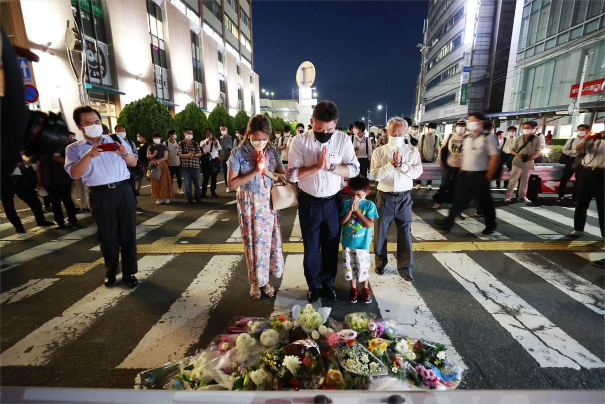
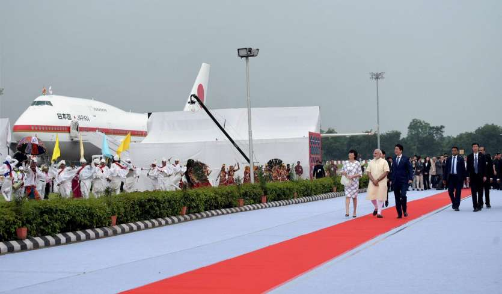

Shinzo A
安倍 晋三
1954 - 2022
Shinzo Abe (安倍 晋三) was a Japanese politician who served as Prime Minister of Japan and President of the Liberal Democratic Party (LDP) from 2006 to 2007 and again from 2012 to 2020. He was the longest-serving prime minister in Japanese history. Abe also served as Chief Cabinet Secretary from 2005 to 2006 under Junichiro Koizumi and was briefly leader of the opposition in 2012. It was Shinzo Abe who first came up with the idea of the arc of democracy, stretching from the US to Japan and on to Australia and India, to contain China's assertiveness. Shinzo Abe has been a fast friend of India and was one of the first world leaders to realise the importance of India's position as a major Asian democratic power.
Illustrious Career
Shinzo Abe was born on 21 September 1954 in Shinjuku, Tokyo, to a prominent political
family with significant economic influence throughout pre-war, wartime and post-war Japan.
His family was originally from Yamaguchi Prefecture, and Abe's registered residence (honseki chi) is Nagato, Yamaguchi.
His maternal grandfather Nobusuke Kishi was de facto "economic king" of occupied China and Manchukuo,
a Japanese puppet state in Northern China that was established after the Japanese invasion of Manchuria,
in the lead-up to the Second Sino-Japanese War and World War II.
His paternal grandfather Kan Abe was a Yamaguchi landowner who served in the House of Representatives
during World War II. In contrast to his maternal grandfather, Kan Abe was a stalwart pacifist who opposed
the Tojo government and war in East Asia. His father Shintaro Abe served in the House of Representatives
from 1958 to 1991, with stints as Chief Cabinet Secretary, Minister for International Trade and Industry,
and Minister for Foreign Affairs.
Abe attended Seikei Elementary School and Seikei Junior and Senior High School (成蹊中学校・高等学校).
He studied public administration and graduated with a bachelor's degree in political science from Seikei
University in 1977. He later moved to the United States and studied public policy at the University of
Southern California's School of Policy, Planning, and Development (now the USC Price School of Public Policy)
for three semesters. In April 1979, Abe began working for Kobe Steel. He left the company in 1982 and pursued
a number of government positions including executive assistant to the Minister for Foreign Affairs, private
secretary to the chairperson of the LDP General Council, and private secretary to the LDP secretary-general.
Abe was born into a prominent political family, including being the grandson of Nobusuke Kishi. His first stint
in the political scene began when he was elected to the House of Representatives in the 1993 election. He was
appointed Chief Cabinet Secretary by Koizumi in September 2005, before replacing him as prime minister and LDP
president in September 2006. He was subsequently confirmed as prime minister by a special session of the
National Diet, becoming Japan's youngest post-war prime minister, and the first to have been born after
World War II. Abe resigned as prime minister just after one year in office due to medical complications
from ulcerative colitis, shortly after his party lost that year's House of Councillors election. He was replaced
by Yasuo Fukuda, who became the first in a series of five prime ministers who each failed to retain office for
more than sixteen months.

On 8 July 2022, Abe was assassinated by a former Japan Maritime Self-Defense Force sailor while delivering a campaign speech in Nara. According to police investigations, Abe was targeted by the suspect because of his perceived ties with the Unification Church, a new religious movement founded in South Korea.
A True Friend of India
Abe was no ordinary politician. He was that rare breed of politician who nurtured a vision for Japan to emerge not just as a robust economic power in the 21st century but also as one that could meaningfully contribute to the emerging geopolitical challenges in the Indo-Pacific region. A nationalist, his message when he returned to office in 2012 after a short-lived first stint in 2007, was unambiguous - "Japan is back" - implying the country's new-found role and confidence as a guardian of the global commons.

For India, Abe will always remain special. Together with Prime Minister Modi, he injected fresh momentum in ties.
Japan's participation in India's flagship projects, be it the high-speed rail - bullet train - or advancing
infrastructure and connectivity projects around the country, demonstrated his commitment to India's development.
He publicly stated that "the India-Japan relationship is blessed with the largest potential in the world".
This echoed sentiments expressed by Prime Minister Modi that he saw Japan "as an indispensable partner in India's continuing transformation".
Riding on Prime Minister Modi's vision of Japan playing an integral role in India's developmental aspirations,
Abe joined hands with him to support flagship initiatives such as Make in India and Skill India. Japan emerged
as a leading source of foreign direct investment. Naval cooperation deepened with Japan's induction as a regular
participant in the Malabar Exercise. Exercises between ground forces also commenced under his watch.
India remained a priority for Abe both in and out of office. His personal commitment to strengthening the
special strategic and global partnership was whole-hearted. In his 2006 bestseller book 'Utsukushii Kuni-e'
(Toward a Beautiful Country), Abe had presciently noted that it would not surprise him if "in another decade,
Japan-India relations overtake Japan-US and Japan-China ties." He will, forever, remain in our hearts as a true friend of India.